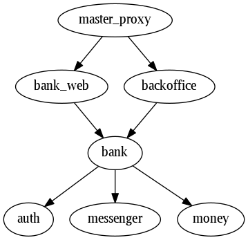
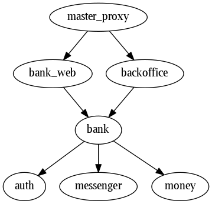

Acme Bank
Acme Bank is an example project to explore and experiment with building modular and maintainable Elixir/Phoenix applications.
See README on GitHub for more information, including setup instructions.
Apps

Acme Bank is an example project to explore and experiment with building modular and maintainable Elixir/Phoenix applications.
See README on GitHub for more information, including setup instructions.
